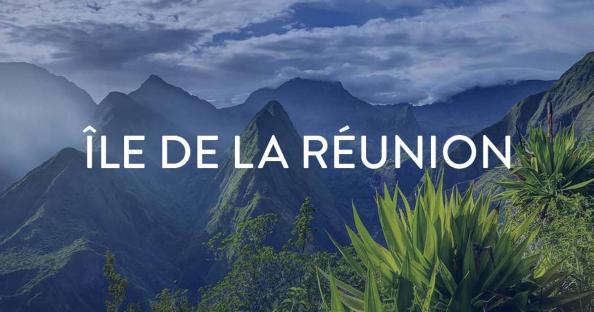

L'île de la Réunion est un département français de l'océan Indien. Elle est réputée pour son intérieur volcanique recouvert de forêt tropicale, ses récifs de corail et ses plages. Son site le plus emblématique est le piton de la Fournaise, un volcan actif qui peut être gravi et s'élève à 2 632 m d'altitude. Le piton des Neiges, un immense volcan éteint, et les 3 caldeiras de la Réunion (amphithéâtres naturels formés par des volcans qui se sont effondrés) sont également des spots d'escalade.
